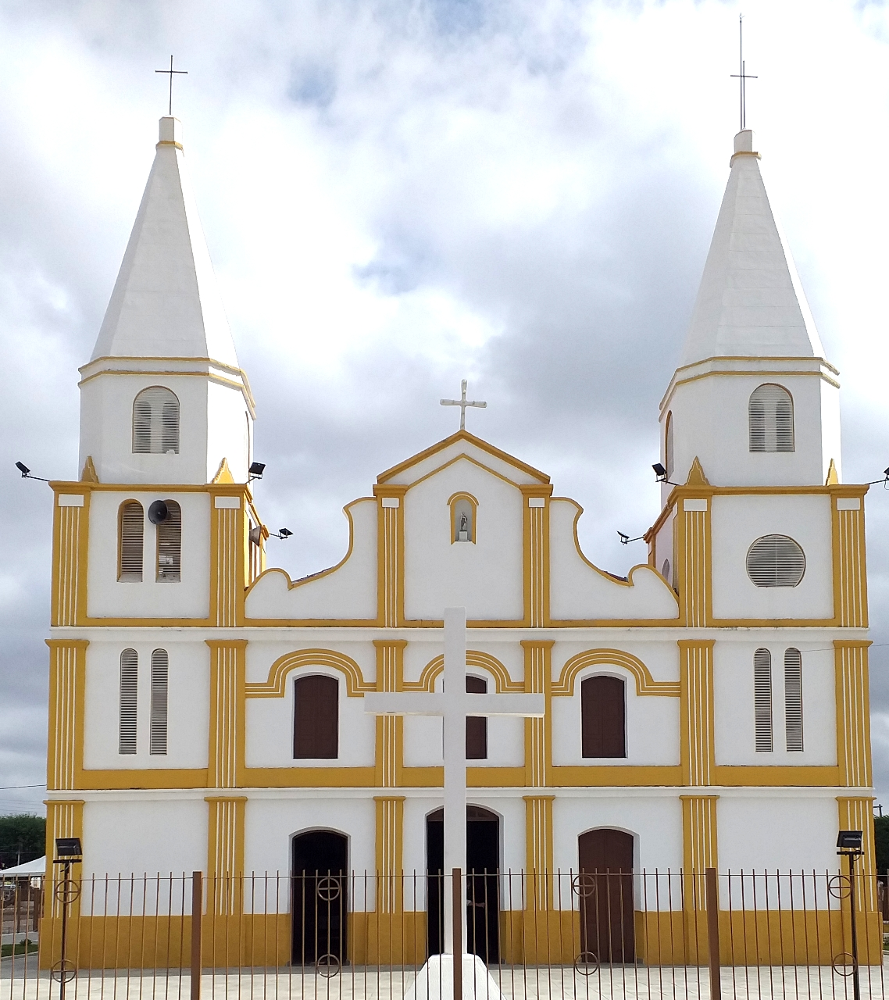
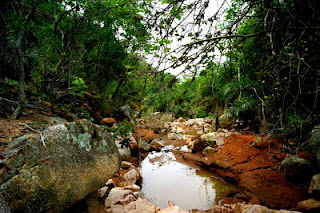

Paroquia de Uauá
foi criada no dia 24 de maio de 1923, por decreto do Arcebispo Dom Jerônimo Tomé de Sousa

Pedra do índio
Pedras perfeitamente sobrepostas, que faz qualquer pessoa se perguntar como elas foram parar naquele local.

Serra do sobrado
A Serra do Sobrado reúne a exuberância da natureza ainda preservada no topo da serra, onde é chamada popularmente de o ''Tributo''.